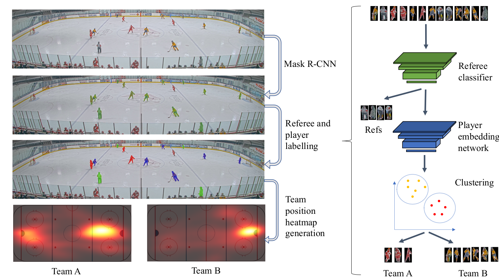

Detecting and tracking players throughout the game is important for game analysis and automatic stats collection. It supports other sports video understanding tasks such as game event detection. Current state-of-the-art approaches are mostly focused on MOT (Multi-object tracking) of pedestrians and vehicles. Tracking players bring its own challenges: players on the same team have very similar appearance, fast motion and frequent occlusions complicate the task. In our research, we are building on top of current MOT state-of-the-art methods while addressing sports-specific challenges.
We address the problem of unsupervised classification of players in a team sport according to their team affiliation, when jersey colours and design are not known a priori. We adopt a contrastive learning approach in which an embedding network learns to maximize the distance between representations of players on different teams relative to players on the same team, in a purely unsupervised fashion, without any labelled data. We evaluate the approach using a new hockey dataset and find that it outperforms prior unsupervised approaches by a substantial margin, particularly for real-time application when only a small number of frames are available for unsupervised learning before team assignments must be made. Remarkably, we show that our contrastive method achieves 94% accuracy after unsupervised training on only a single frame, with accuracy rising to 97% within 500 frames (17 seconds of game time). We further demonstrate how accurate team classification allows accurate team-conditional heat maps of player positioning to be computed.

M. Koshkina, H. Pidaparthy, J.H. Elder "Contrastive Learning for Sports Video: Unsupervised Player Classification" accepted to CVPR Vision in Sports Workshop. Pre-print can be found here.
For more info see our project page and code.